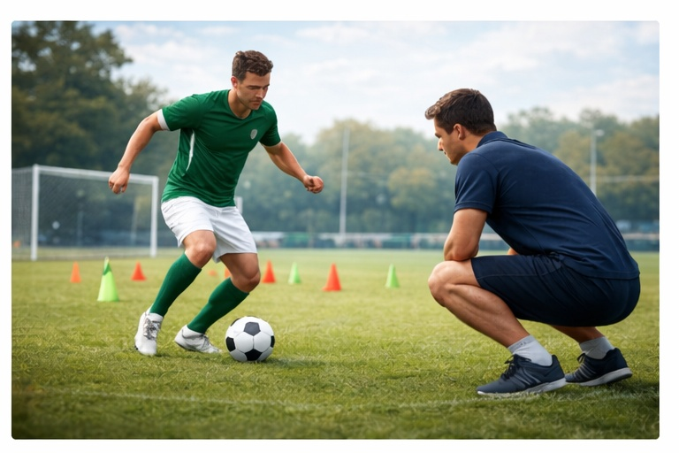

Боль в колене после операции
Как проходит восстановление и какие ошибки мешают реабилитации.
После хирургического вмешательства коленному суставу требуется поэтапное восстановление. Нарушение режима нагрузки и пропуск реабилитации повышают риск хронической боли.
Грамотное сопровождение помогает вернуть подвижность и уверенность в движении.
Основные причины боли
🏥 Недостаточная реабилитация
Пропуск упражнений замедляет восстановление.

Регулярная работа — основа успешного восстановления.
📈 Ранние нагрузки
Возврат к спорту раньше срока повышает риск осложнений.

Режим должен быть постепенным.
🦵 Ограничение подвижности
Скованность мешает нормальной работе сустава.

Работа над объёмом движений обязательна.
💤 Недостаток восстановления
Переутомление замедляет заживление.

Сон и отдых — часть лечения.
Другие ситуации с коленом
Правильная реабилитация — ключ к полноценному возвращению в спорт.
Записаться на консультацию